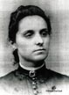

notre ancêtre de la 5ième génération
fiche familiale
Olivier Barriault/Bariault
décède à l'âge de 74 ans
Naissance: 24 avril 1818 à Rimouski
Baptême: 1 juin 1818 à St-Germain de Rimouski
Décès: en 1893 à Fall River, Mass. USA
Père: Martin Bériau/Barriault
Mère: Marie-Basilisse Choret/Charet/Chauret
(sa famille)
Mariage: 30 janvier 1843 à Ste-Luce-sur-Mer, cté Rimouski
Épouse: Marie-Catherine Gaudreau
décède à l'âge de 65 ans
Naissance: en 1816
Décès: 10 déc 1881 à Ste-Luce-sur-Mer
Père: Germain Gaudreau
Mère: Élisabeth-Louise-Marguerite Fournier
(sa famille)
Enfant 1 André Barriault/Bariault
décède à l'âge de 81 ans
Naissance: 28 nov 1843 à Ste-Luce-sur-Mer
Baptême: 29 nov 1843 à Ste-Luce-sur-Mer
Décès: 14 avril 1925 à Duxbury, Mass. USA
Sépulture: au cimetière St-Joseph's de Kingston, Mass. USA
Mariage: 8 février 1864 à Le Bic, cté Rimouski
Conjointe: Arthémise Talbot
n. en 1843 d. en 1920
Père: Pierre Talbot
Mère: Soulange Ouellet
Enfant 1 Joseph-Noël Barriault
Naissance: 25 déc 1864 à Ste-Flavie, cté Rimouski
Enfant 2 Jean-Baptiste Barriault
Naissance: en 1866 à Ste-Flavie, cté Rimouski
Enfant 3 Jules/Bennett Barriault
Naissance: 24 avril 1868 à Ste-Flavie, cté Rimouski
Décès: 17 mars 1934 à Duxbury, Mass. USA
Sépulture: au cimetière St-Joseph's de Kingston, Mass. USA
Mariage: vers 1902
Conjointe: Eva Burke
n. en 1882 d. 13 jul 1926
Enfant 4 Anonyme Barriault
Naissance: 20 mars 1870 à Ste-Flavie, cté Rimouski
Décès: 20 mars 1870 à Ste-Flavie
Enfant 5 André Barriault
Naissance: 10 mars 1871 à Ste-Flavie, cté Rimouski
Décès: 18 fév 1902 à Duxbury, Mass. USA
Enfant 6 Marie-Léontine Barriault
Naissance: 9 avril 1873 à Ste-Flavie, cté Rimouski
Enfant 7 Delvina Barriault
Naissance: 13 jun 1875 à St-Joseph-de-Lepage, cté Rimouski
Enfant 8 Alphonsine Barriault
Naissance: 5 juin 1878 à St-Joseph-de-Lepage, cté Rimouski
-------------------------------------------------------------------------------
Enfant 2 Jean-Baptiste Barriault/Bériault
Naissance: 6 mars 1845 à Ste-Luce-sur-Mer, cté Rimouski
Mariage: 8 fév 1869 à Ste-Flavie, cté Rimouski
Conjointe: Marie-Léontine Sirois
n. en 1847
Père: Théodore Sirois-Duplessis
Mère: Marie-Louise Dauteuil
Enfant 1 Charles Barriault
Naissance: en 1873
Enfant 2 Augustine Barriault
Naissance: en 1875
Enfant 3 Arthur Barriault
Naissance: en 1877
Enfant 4 Adélard Barriault
Naissance: en 1879
-------------------------------------------------------------------------------
  |
Enfant 3 Fabien Barriault décède à l'âge de 80 ans Naissance: 31 décembre 1846 à Ste-Luce-sur-Mer, cté Rimouski Décès: 23 novembre 1927 à Putnam, Connecticut, USA. Mariage: 4 septembre 1871 à St-Colomb de Sillery. Conjointe: Marie-Anne Morissette n. en 1850 (sa famille) |
Enfant 4 Octave Barriault
Naissance: 29 août 1848 à Ste-Luce-sur-Mer, cté Rimouski
-------------------------------------------------------------------------------
Enfant 5 Célestin Barriault
Naissance: 19 juin 1850 à Ste-Luce-sur-Mer, cté Rimouski
Baptême: 22 juin 1850 à Ste-Luce-sur-Mer
Mariage: 8 août 1870 à St-Donat, cté Rimouski
Conjointe: Célina Thiboutot/Thibodeau
n. en 1847
Père: Benjamin Thiboutot
Mère: Esther Dionne
Enfant 1 Joseph Barriault
Naissance: 30 oct 1876
Mariage: 16 mai 1899 à St-Joseph-de-Beauce
Conjointe: Claire Mailloux
Enfant 2 Rose-Anne Barriault
Naissance: en 1879
Mariage: 22 nov 1899 à St-Donat, cté Rimouski
Conjoint: Moïse Paradis
Enfant 3 Philias Barriault
Naissance: 4 avr 1882
Mariage: 8 avr 1902 à St-Donat, cté Rimouski
Conjointe: Marie-Anne Mailloux
Enfant 4 Eugénie Barriault
Naissance: 4 avr 1884
Mariage: 15 oct 1901 à St-Donat, cté Rimouski
Conjoint: Xavier Bernier
Enfant 5 Auguste Barriault
Naissance: 15 jul 1886
-------------------------------------------------------------------------------
Enfant 6 Joseph Barriault
Naissance: 20 juin 1852 à Ste-Luce-sur-Mer, cté Rimouski
Baptême: 21 juin 1852 à Ste-Luce-sur-Mer
-------------------------------------------------------------------------------
Enfant 7 Justine Barriault
décède à l'âge de 62 ans
Naissance: 28 août 1854 à Ste-Luce-sur-Mer, cté Rimouski
Baptême: 30 août 1854 à Ste-Luce-sur-Mer
Décès: en 1917 à Fall River, Mass. USA
Mariage: 3 nov 1885 à St-Aune de Fall-River
Conjoint: Georges Vasser
-------------------------------------------------------------------------------
Enfant 8 Augustine Barriault
décède à l'âge de 64 ans
Naissance: en 1856 à Ste-Luce-sur-Mer, cté Rimouski
Décès: 24 déc 1920 à Fall River, Mass. USA
Conjoint: Georges Levasseur
-------------------------------------------------------------------------------
Enfant 9 Damasse Barriault
Naissance: 7 sep 1857 à Ste-Luce-sur-Mer, cté Rimouski
Baptême: 8 sep 1857 à Ste-Luce-sur-Mer
-------------------------------------------------------------------------------
Enfant 10 Octave Barriault
décède à l'âge de 3 ans
Naissance: en 1859 à Ste-Luce-sur-Mer, cté Rimouski
Décès: 22 fév 1862 à Ste-Luce-sur-Mer
-------------------------------------------------------------------------------
Enfant 11 Ferdinand Barriault
Naissance: 5 août 1860 à Ste-Luce-sur-Mer, cté Rimouski
Baptême: 12 août 1860 à Ste-Luce-sur-Mer
-------------------------------------------------------------------------------
|  |
Enfant 12 Marie-Malvina Barriault décède à l'âge de 78 ans Naissance: 15 juin 1862 à Ste-Luce-sur-Mer, cté Rimouski Baptême: 16 juin 1862 à Ste-Luce-sur-Mer Décès: 20 jul 1940 à Charlo, Restigouche, NB Mariage: 12 nov 1887 à Fall River, Mass. USA Conjoint: Philias-Arthur Pelletier Naissance: 4 jul 1851 à St-Éloi, cté Rivière-du-Loup Décès: 6 août 1923 à Charlo, Restigouche, NB Père: Pierre Pelletier Mère: Geneviève Lamarre |